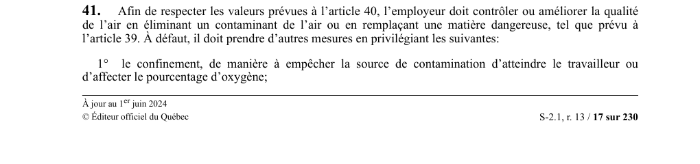

art-41-RSST : contrôle de la qualité de l'air
Un article du wiki ⚖️ Recueil législatif
En bref
Pour respecter les valeurs prévues à l'article 40, l'employeur doit d'abord contrôler ou améliorer la qualité de l'air en éliminant le contaminant ou en remplaçant la matière dangereuse (art. 39). À défaut, il prend d'autres mesures, par ordre de priorité. Cette obligation vise l'employeur.
- 1° le confinement, pour empêcher la source de contamination d'atteindre le travailleur ou d'affecter le taux d'oxygène;
- 2° le contrôle des procédés (abattement des poussières), puis la ventilation locale et, ensuite, générale.
- Mesures également requises lors de la conception, de l'aménagement ou de la modification de l'établissement.
🌐 LegisQuébec · 📄 PDF officiel
Texte officiel : capture du PDF
{kind=link}

Toucher l'image pour l'agrandir🔗 Voir art. 41 RSST dans le PDF (page 17) · texte à jour au 1er juin 2024
📚 Source légale : D. 885-2001, a. 41; D. 49-2022, a. 3. · LégisQuébec
Voir aussi
- art. 39 : remplacement des matières dangereuses · substitution des matières dangereuses, première mesure de la hiérarchie.
- art. 44 : méthodes de mesure des contaminants · mesure des contaminants au niveau de la zone respiratoire.
- ⚖️ Loi habilitante : LSST
- ↑ Index du bloc : Qualité de l'air
Pages qui pointent ici (23)
- 🎯 Démarrage rapide, conseiller SST Hygiène industrielle
- 👔 Bienvenue, gestionnaire Hygiène industrielle
- Agresseurs biologiques Hygiène industrielle
- Agresseurs chimiques Hygiène industrielle
- art-101-RSST Toxicologie
- art-116-RSST, qualité air milieu travail Hygiène industrielle
- art-30-RSST Hygiène industrielle
- art-39-RSST Hygiène industrielle
- art-40-RSST : aucun travailleur ne doit être exposé Recueil législatif
- art-41-RSST Hygiène industrielle
- art-41.1-RSST : malgré l'article 41, un employeur peut fournir un Recueil législatif
- art-44-RSST : méthodes de mesure des contaminants Recueil législatif
- art-45-RSST : appareil de protection respiratoire Recueil législatif
- art-62-RSST Hygiène industrielle
- art-94-RSSM : ventilateur fonctionnement continu présence personnes Recueil législatif
- art-95-RSSM : remise marche ventilateur avant accès Recueil législatif
- art-96-RSSM : réintégration poste après sautage Recueil législatif
- art-97-RSSM : ventilation locale ou humidification Recueil législatif
- art-98-RSSM : contrôle poussières mouvement roche équipements Recueil législatif
- Gestion du SIMDUT et FDS en mine Hygiène industrielle
- RSST Recueil législatif
- RSST Hygiène industrielle
- RSST : Section 5 : Qualité de l'air Recueil législatif